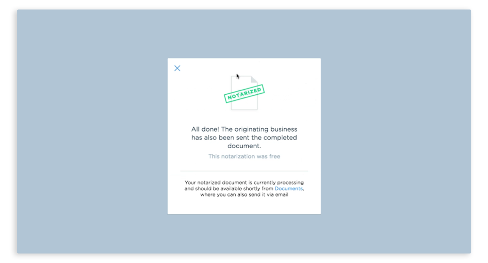

From creating and printing, to sending, tracking and receiving, most folks familiar with the lien waiver process will tell you it’s clunky at best. A job that is often tedious and inefficient, the process can move at a glacial pace, which slows down the construction project as a whole.
Here’s how it typically works: general contractors manually create lien waivers (of which there can be hundreds), send them out in the mail to be signed, and then simply wait for them to be filled out and mailed back. In some cases, contractors rely on their subcontractors to create and submit lien waivers. This adds yet another layer to the process that can result in even longer payment delays.
Sounds a bit inconvenient, right? Sure. But if you think that process sounds laborious, try adding notarization into the mix. Three out of the U.S.’s fifty states — Texas, Mississippi and Wyoming — require subcontractors and vendors to notarize their signed lien waivers, but this requirement can be a tough ask for busy workers. Owners, lenders or attorneys could also require lien waivers to be notarized in addition to state requirements. The paper trail associated with the lien waiver ecosystem is complicated as it is, so requiring notarization only makes it more convoluted.
Lienwaivers powered by Built offers a solution that simplifies the process and seamlessly facilitates both the signing and notarization of lien waivers through easy-to-use technology that conforms to your current business flow. By connecting to project management and accounting software commonly used in the construction sector, Built’s notarized lien waiver solution boils down the entire process into a few simple steps.
With this solution you can give both your inkjet printer and your keyboard a break, and instead let our technology do the work. Because our solution syncs with software such as Procore, QuickBooks, Xero and Sage, you’ll eliminate duplicate data entries and save hours of time. Instead of manually creating each individual lien waiver, you can automate the process by pulling data from your preexisting accounts to inform the data fields on your waiver.
This technology simplifies processes for folks on every rung of the proverbial ladder, and as a result, contractors all over — especially in Texas, Mississippi and Wyoming! — are noticing greater efficiency across nearly every aspect of the business.
Check out the three ways Lienwaivers powered by Built can help you reduce errors, eliminate excessive paperwork and improve efficiency when it comes to signing and notarizing lien waivers:
{{ script_embed(‘wistia’, ‘tm51co6iyd’, ‘, ‘, ‘inline,responsive’) }}
OPTION 1: Email Tracking
Boasting the ability to batch-create and batch-send your lien waivers with a few clicks, you can opt to send all documentation electronically, or even operate with a hybrid system, merging your printed documents and wet-ink signatures with our electronic tracking and filing capabilities. We understand that paper will never be fully obsolete (and we know that some subcontractors are “old school” and insist upon signing hard copies) but regardless of how your business is conducted, Lienwaivers powered by Built can make the process better.
To improve upon your paper-based process, our Email Tracking tool facilitates bulk scans of your hard copy lien waivers and sends them directly into your Lienwaivers dashboard where they are automatically marked as signed and then paired with the corresponding project and subcontractor. Conveniently, if you’re working in conjunction with one of the aforementioned project management or accounting systems, the signed waivers will be dually saved across both platforms.
Pro tip: Have subcontractors email notarized lien waivers directly to your Lienwaivers dashboard via Email Tracking, marking lien waivers as signed and keeping lien waivers out of your email inbox.
You will be able to keep a bird’s eye view on which waivers have been viewed, signed and ultimately delivered — meaning no documents will get “lost in the mail” — and keep track of everything further down the road, ensuring you can always find what you need.

OPTION 2: Send lien waivers for electronic notarization via Lienwaivers + DocuSign
Ready to eliminate the paper trail, prevent your vendors from driving around town in search of a notary and shift your entire documentation process online? We can help. Lienwaivers powered by Built integrates seamlessly with DocuSign, leveraging their eSignature and eNotary capabilities to improve upon your documentation processes, all within the online space.
Account users have the ability to access the DocuSign integration through their Lienwaivers or Procore account, where they can easily create, send, receive and track the progress of their documents. Meanwhile, subcontractors and vendors have the ability to electronically sign and notarize without jumping through the hoops of creating an account. This no-account-necessary function makes the program easy to use and easy to access. By eliminating the scavenger hunt for a notary and making the document delivery process almost instantaneous, subcontractors are able to complete documentation and get paid quickly.
Together with DocuSign, we’ve removed typical barriers to document notarization and seamlessly facilitated official document exchange in the online space. As a result, business processes have been accelerated where it matters most: ensuring vendors are paid efficiently.

OPTION 3: Send lien waivers for electronic notarization via Lienwaivers + Notarize.com
Notarize.com is an industry leader in online notarization featuring a unique, two-way video call system that allows you to confirm your identity with a registered notary who can instantly officiate your documents. A seamless integration that connects to your Lienwaivers powered by Built dashboard, contractors can send a signed lien waiver out for electronic notarization using their Notarize.com account. Then subcontractors and vendors simply receive an email with a link to notarize via the FaceTime-like video call. Accessible from their computer, tablet or smartphone, this integration is one of our favorites due to its ease of use and quickness.
Best of all, waivers sent out electronically through this platform are returned on average in 2.8 days, whereas paper documents typically take 12 or more. Talk about an improvement! Plus, Lienwaivers powered by Built also allows contractors to send email reminders to any vendors who are dragging their heels and holding up the process. This feature further ensures the expedient return of documentation, and ultimately accelerates payments.
If you’re a contractor in Texas, Wyoming and Mississippi or are required by a lender, owner or attorney to notarize your lien waivers, our technology is a game-changer in speeding up the payment process. Reach out to Lienwaivers powered by Built to see how we can help with your notarized lien waiver process today!
Topics: LIEN WAIVERS